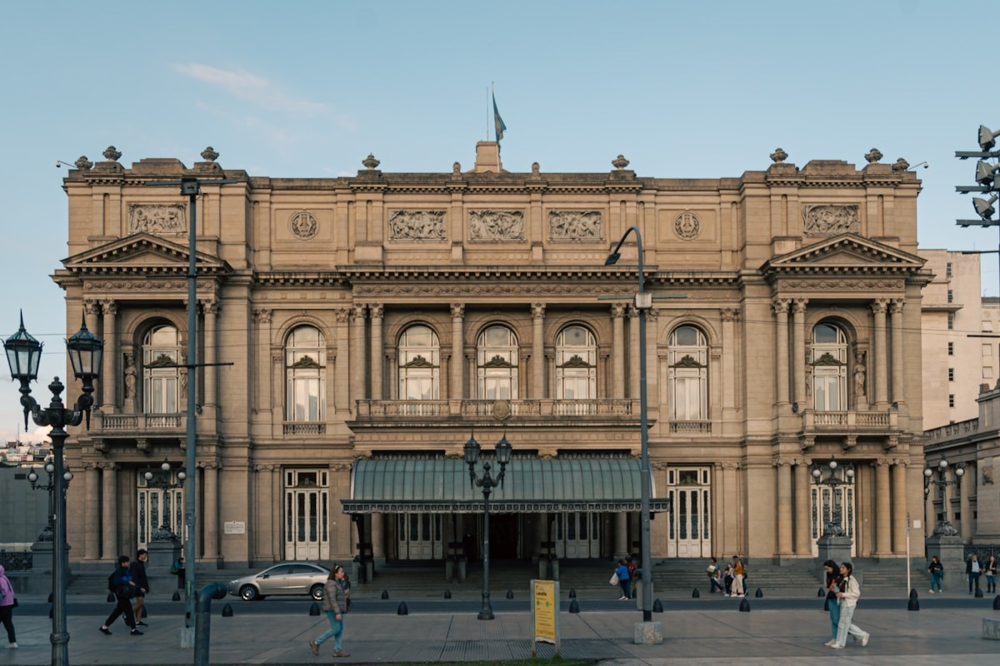
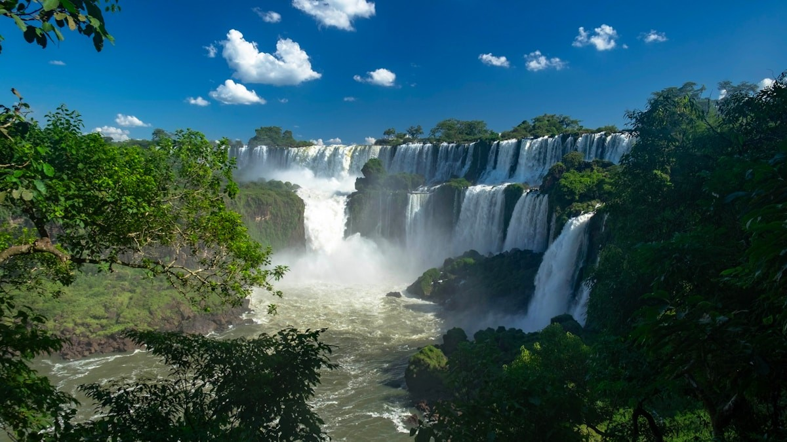
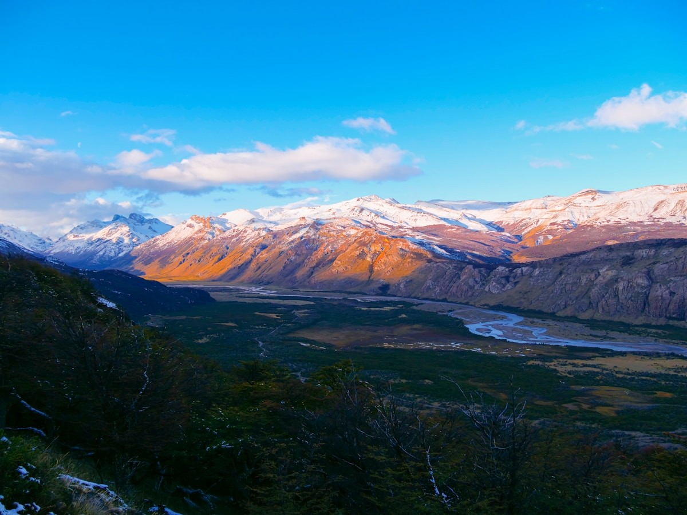

GUÍA VISUAL · ARGENTINA
Un país, mil formas de viajar.
Desde las cumbres de la Patagonia hasta la energía de Buenos Aires y la fuerza de Iguazú, Argentina ofrece paisajes y lugares únicos para conocer.
Visitar Argentina Travel ↗03 DESTINOS PARA EMPEZAR
Un recorrido de sur a norte:

02 — CENTRO
Buenos Aires
Arquitectura, librerías, barrios y una escena cultural siempre activa.
Conocer Buenos Aires ↗
03 — LITORAL
Iguazú
Una de las mayores maravillas naturales de Sudamérica.
Conocer Iguazú ↗PAISAJES + CULTURA
Argentina se recorre con todos los sentidos.
El país reúne desiertos, montañas, humedales, ciudades y costas en un territorio de grandes contrastes.

DATOS DESTACADOS
Una geografía que no entra en una sola postal.
2,78 M
km² de superficie continental.
7
regiones turísticas para explorar.
Infinitas
historias para convertir en viaje.